Gallery: Relationships & Trends
Source:vignettes/articles/gallery-relationships.Rmd
gallery-relationships.Rmd本页解决什么问题：Show relations between continuous variables: points, smooths, counts. 前置：已完成 gallery-distributions
下一步：→ gallery-coordinates
Scatter designs
Grouped scatter
ggplot2::mpg |>
plotit(encode(x = displ, y = hwy, colour = class)) |>
mark_point(size = 2, alpha = 0.8) |>
label_title("Highway mileage by engine class")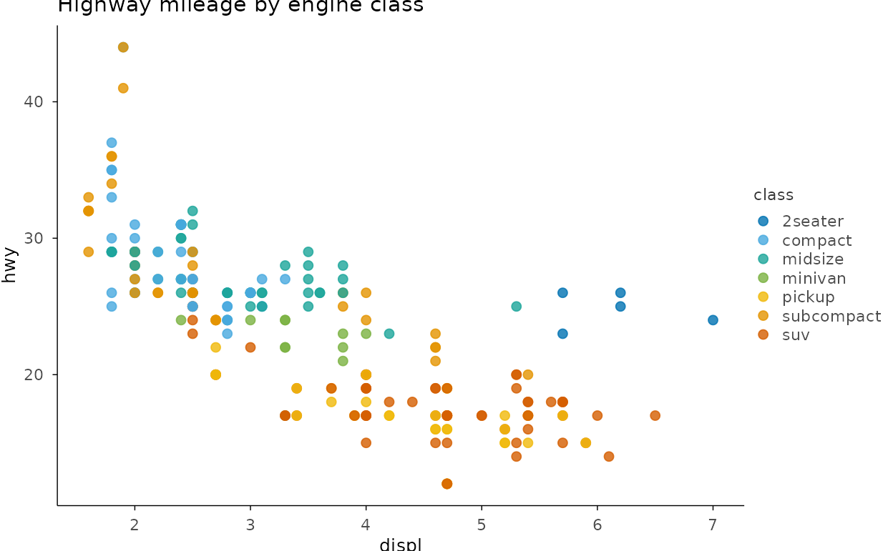
Count-adjusted points
set.seed(7)
ggplot2::mpg |>
plotit(encode(x = displ, y = class)) |>
mark_count() |>
label_title("mark_count(): points sized by overlap")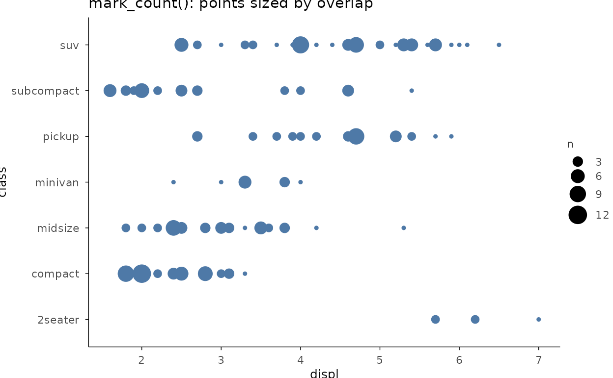
Log-log with a linear fit
set.seed(3)
dm <- ggplot2::diamonds[sample(nrow(ggplot2::diamonds), 600), ]
dm |>
plotit(encode(x = carat, y = price)) |>
mark_point(alpha = 0.5, size = 1.5) |>
mark_smooth(method = "lm", se = FALSE, colour = "#E15759") |>
scale_x(trans = "log10") |>
scale_y(trans = "log10") |>
label_title("Price vs carat on log axes")
#> `geom_smooth()` using formula = 'y ~ x'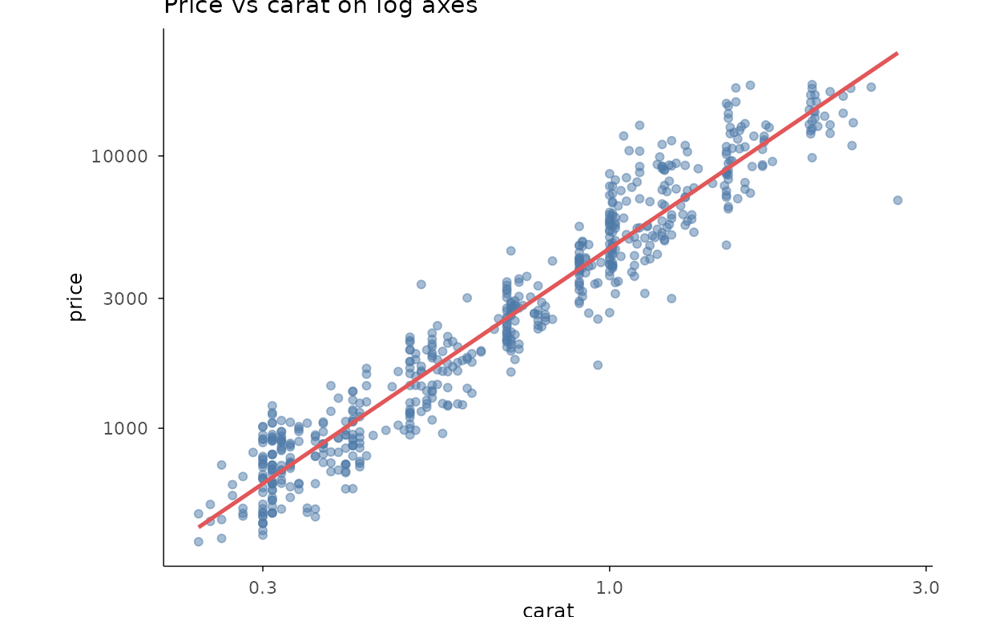
Hexagonal density
dm |>
plotit(encode(x = carat, y = price)) |>
mark_hex(bins = 18) |>
label_title("mark_hex(): dense scatter as a 2D heatmap")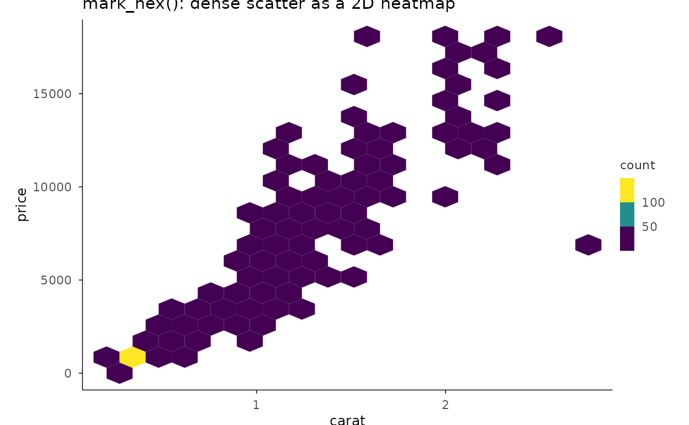
Trends over time
Line + smoothed trend
ggplot2::economics |>
plotit(encode(x = date, y = unemploy)) |>
mark_line() |>
mark_smooth(
method = "loess", formula = y ~ x, se = TRUE,
colour = "#E15759", linewidth = 0.6
) |>
label_title("Unemployment with a loess trend")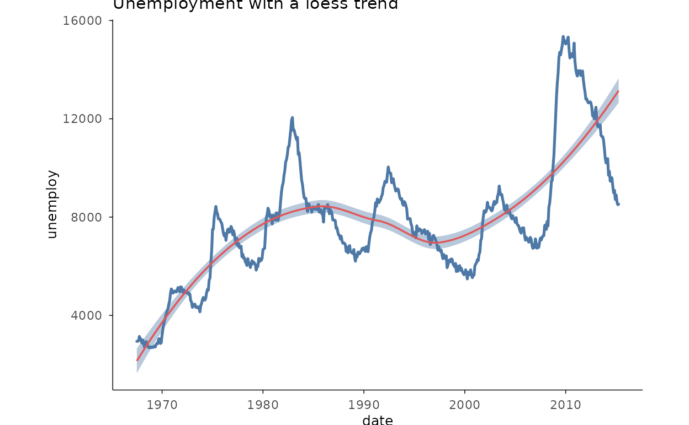
Multi-series lines
two <- subset(
ggplot2::economics_long,
variable %in% c("psavert", "uempmed")
)
two |>
plotit(encode(x = date, y = value, colour = variable)) |>
mark_line() |>
label_axis("value", aes = "y") |>
label_title("Two series from economics_long")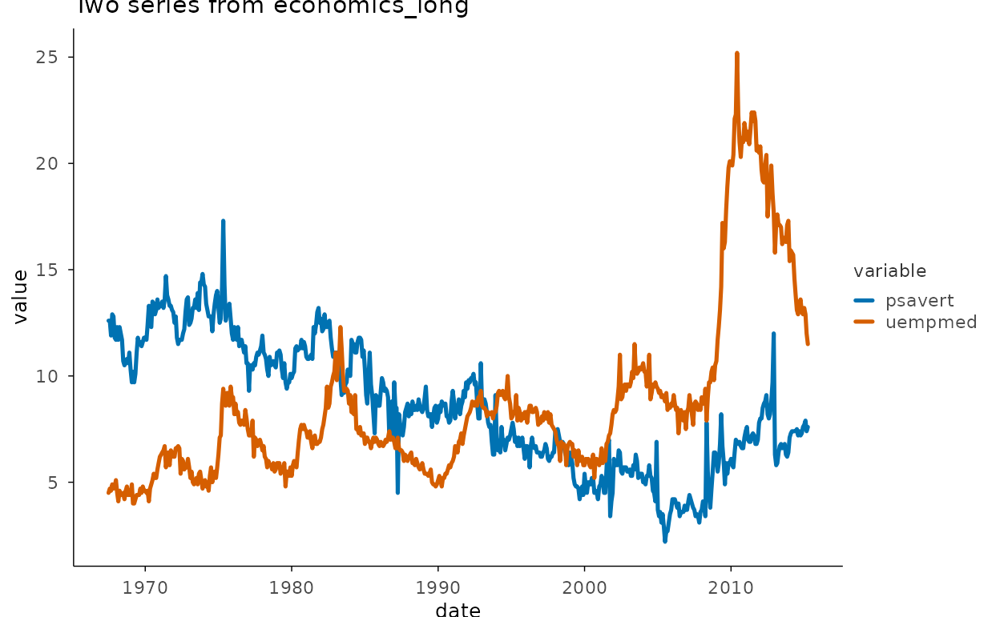
Step series
ggplot2::economics |>
plotit(encode(x = date, y = psavert)) |>
mark_step(direction = "hv") |>
label_title("mark_step(direction = \"hv\")")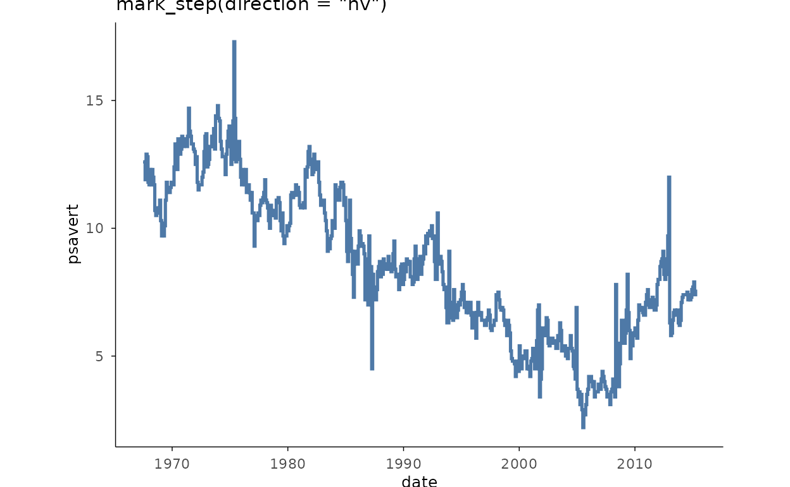
Fitted band + line (area as interval)
fit <- stats::loess(mpg ~ wt, data = mtcars)
grid_wt <- data.frame(wt = seq(min(mtcars$wt), max(mtcars$wt), length.out = 60))
pr <- stats::predict(fit, grid_wt, se = TRUE)
grid_wt$fit <- pr$fit
grid_wt$lo <- pr$fit - 1.96 * pr$se.fit
grid_wt$hi <- pr$fit + 1.96 * pr$se.fit
mtcars |>
plotit(encode(x = wt, y = mpg)) |>
mark_point(size = 1.5, alpha = 0.55) |>
mark_area(
data = grid_wt,
mapping = encode(x = wt, ymin = lo, ymax = hi),
inherit.aes = FALSE, alpha = 0.25, fill = "#4E79A7"
) |>
mark_line(
data = grid_wt, mapping = encode(x = wt, y = fit),
inherit.aes = FALSE
) |>
label_title("Confidence envelope via mark_area(ymin/ymax)")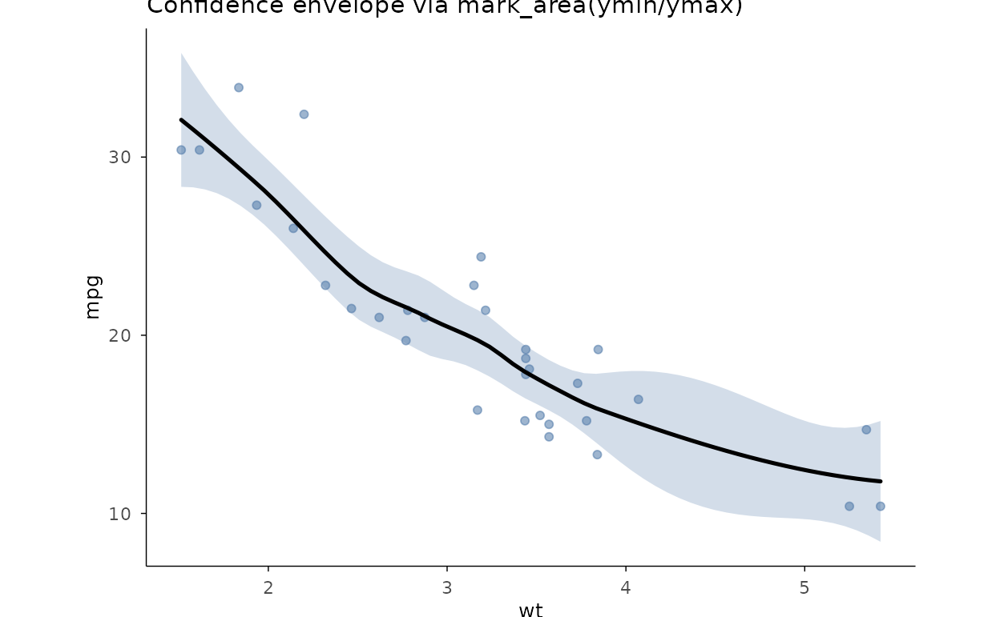
Two-group comparisons
Dumbbell
db <- data.frame(
item = letters[1:6],
before = c(3.2, 4.1, 2.6, 5.0, 3.7, 4.6),
after = c(4.4, 3.5, 3.9, 4.7, 4.8, 3.9)
)
db |>
plotit(encode(x = item, y = before, yend = after)) |>
mark_dumbbell(point_size = 3) |>
project_cartesian(flip = TRUE) |>
label_title("Before / after per item")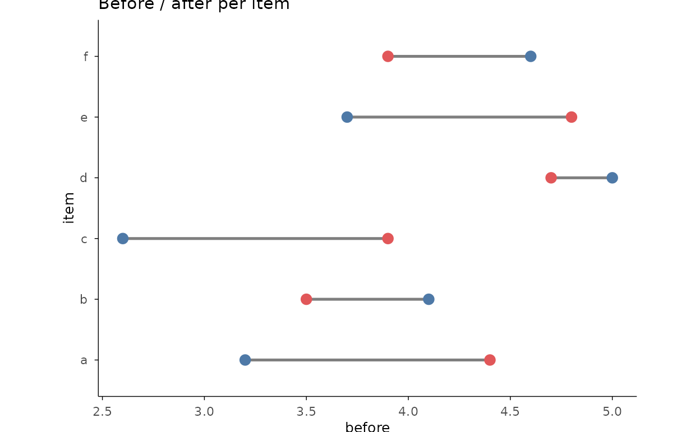
Forest plot
studies <- data.frame(
trial = paste0("Trial ", 1:5),
es = c(0.42, 0.31, 0.55, 0.20, 0.48),
lo = c(0.10, -0.05, 0.30, -0.10, 0.22),
hi = c(0.74, 0.67, 0.80, 0.50, 0.74)
)
studies |>
plotit(encode(x = es, y = trial, xmin = lo, xmax = hi)) |>
mark_forest(ref = 0) |>
label_title("mark_forest(): estimates with 95% intervals")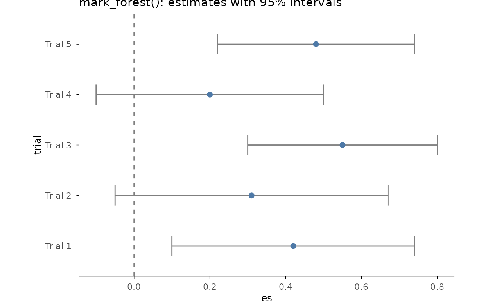
Error bars over group means
sm <- aggregate(Sepal.Length ~ Species, data = iris, FUN = mean)
sd_v <- aggregate(Sepal.Length ~ Species,
data = iris,
FUN = function(x) stats::sd(x) / sqrt(length(x))
)
sm$se <- sd_v$Sepal.Length
sm |>
plotit(encode(
x = Species, y = Sepal.Length, ymin = Sepal.Length - se,
ymax = Sepal.Length + se
)) |>
mark_point(size = 3) |>
mark_errorbar(width = 0.25) |>
label_axis("mean \u00b1 SE", aes = "y")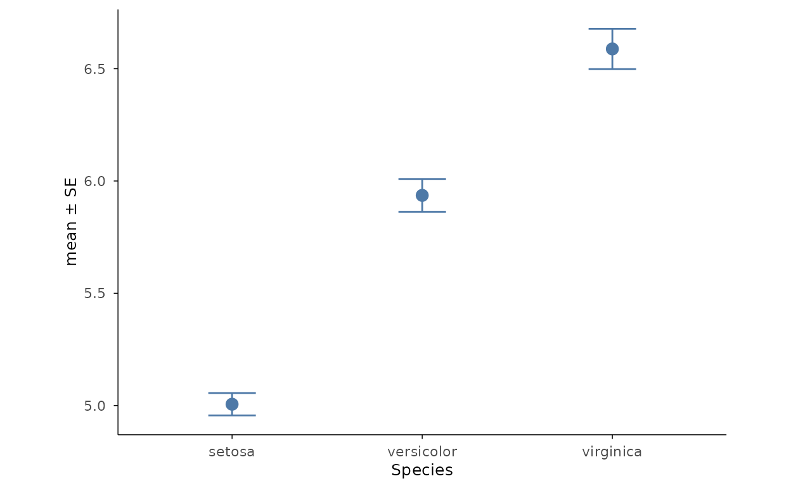
Matrices & surfaces
Correlation heatmap
ggplot2::mpg[, sapply(ggplot2::mpg, is.numeric)] |>
plotit(encode()) |>
mark_corr() |>
label_title("Numeric columns of mpg, reordered by clustering")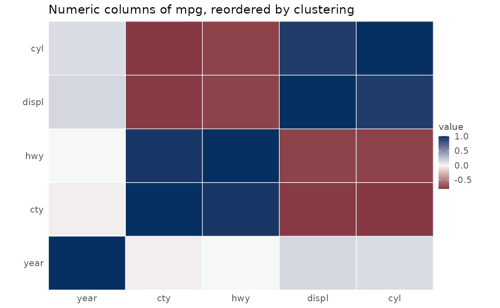
Matrix heatmap
set.seed(42)
expr <- matrix(rnorm(60),
nrow = 12,
dimnames = list(paste0("gene", 1:12), paste0("sample", 1:5))
)
expr |>
plotit(encode()) |>
mark_heatmap(cluster = "both", scale = "row") |>
label_title("mark_heatmap(): hclust reordering + row z-scores")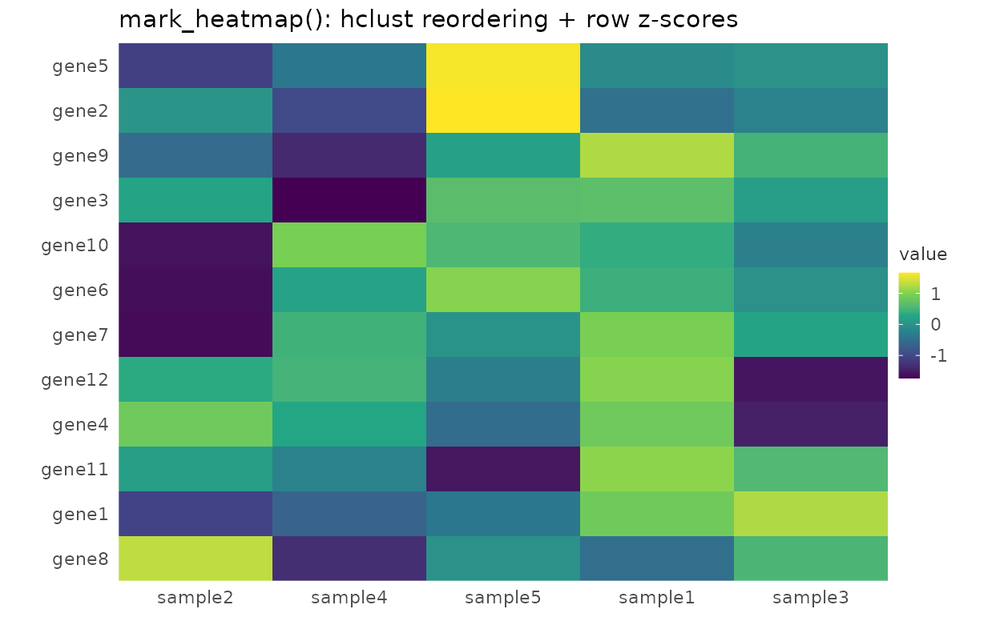
2D contour field
grid_df <- expand.grid(x = seq(0, 10, length.out = 40), y = seq(0, 10, length.out = 40))
grid_df$z <- sin(grid_df$x / 2) * cos(grid_df$y / 2)
grid_df |>
plotit(encode(x = x, y = y, z = z)) |>
mark_contour(filled = TRUE, bins = 9) |>
label_title("mark_contour(filled = TRUE)")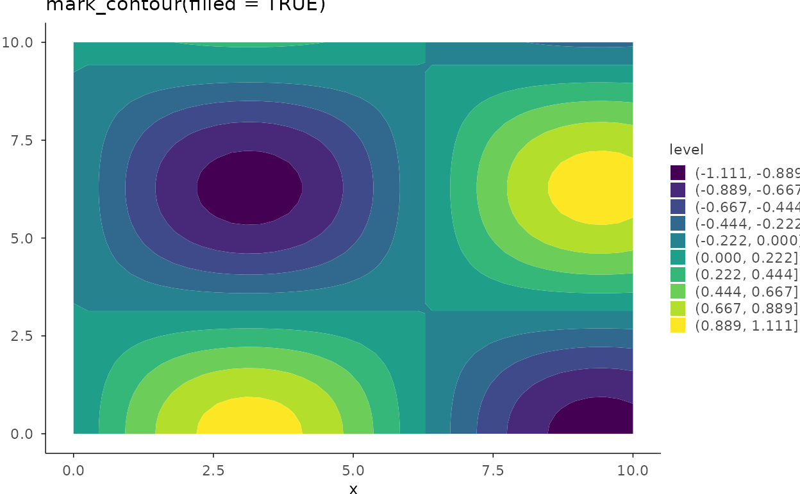
Parallel coordinates
iris |>
plotit(encode()) |>
project_parallel(
columns = c("Sepal.Length", "Sepal.Width", "Petal.Length", "Petal.Width"),
group = "Species", alpha = 0.6
) |>
label_title("project_parallel(group = \"Species\")")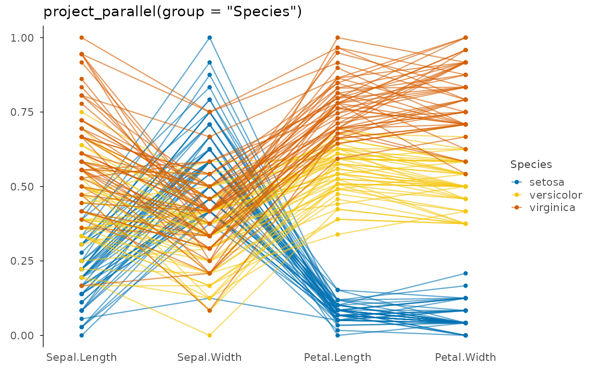